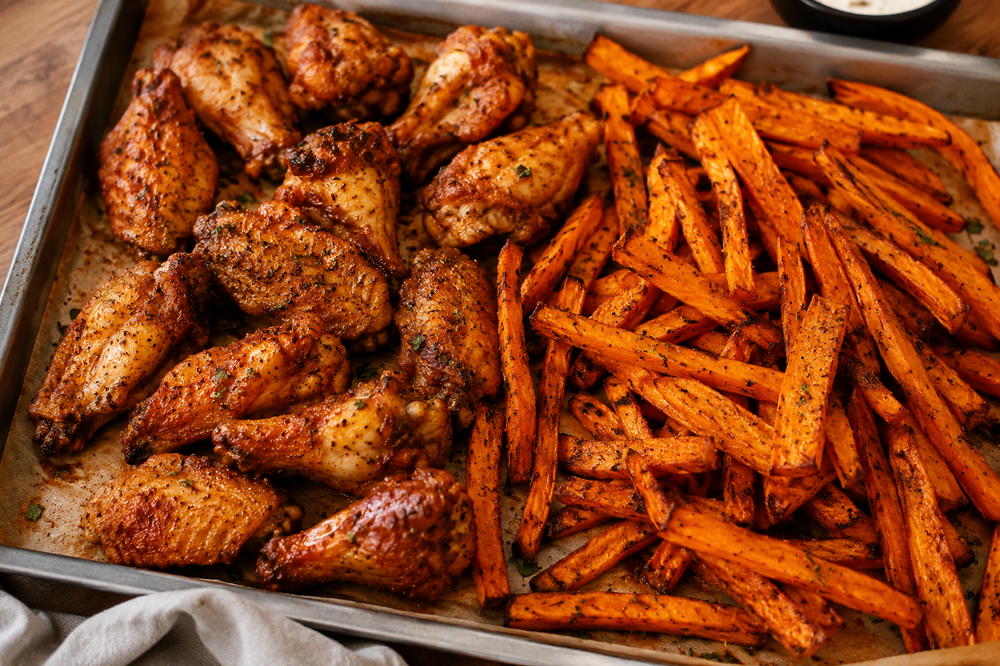

Juicy spiced chicken wings and crispy sweet potato sticks, all roasted together in the oven for an easy, flavour-packed meal.
Preheat the oven to 180°C with fan and top and bottom heat for 10 minutes.
Meanwhile, cut the sweet potato into sticks. Season with salt, pepper, paprika, garlic powder, oregano and a drizzle of olive oil, to taste.
Season the chicken wings on both sides with salt, pepper, cumin, a pinch of paprika and a drizzle of olive oil.
Place the wings on a baking tray and bake for 5 minutes.
Remove from the oven, turn the wings over and add the sweet potato sticks to the tray. Bake for a further 18 minutes.
Check that the wings are golden and the fries are crispy on the outside and tender inside. If needed, continue baking in 5-minute intervals until done.